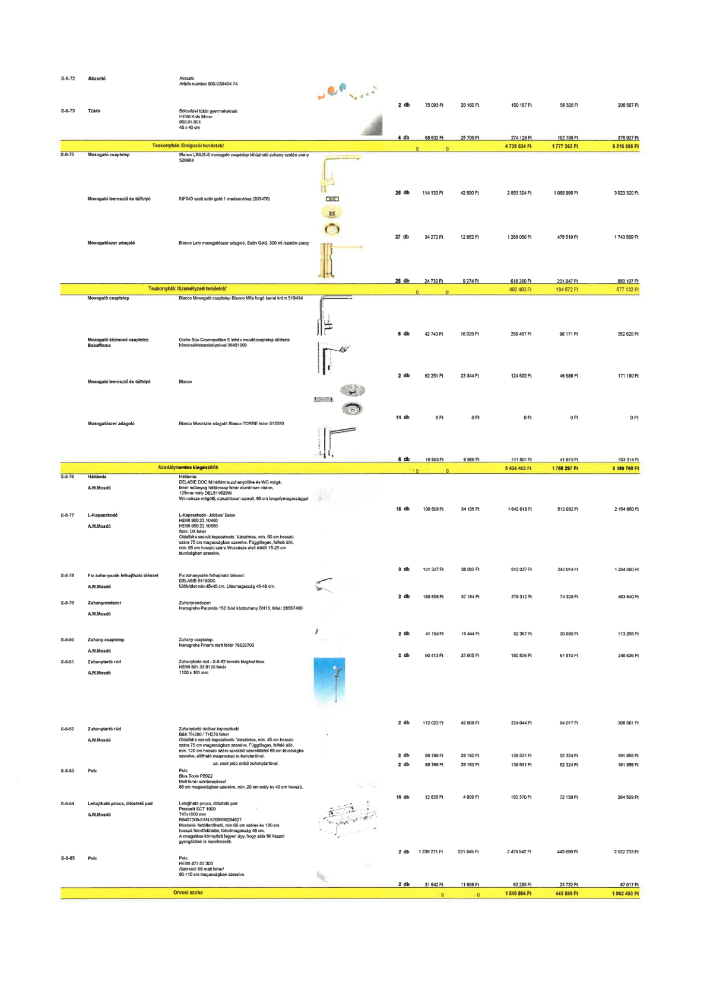

| Tétel | Menny. | Egys. | Anyag e.ár (net HUF) | Díj e.ár (net HUF) | Anyag összesen (net HUF) | Díj összesen (net HUF) | Anyag+Díj összesen (net HUF) |
|---|---|---|---|---|---|---|---|
| S-8-72 Akasztó | 2.0 | db | 75 093 | 28 160 | 150 187 | 56 320 | 206 507 |
| S-8-73 Tükör | 4.0 | db | 68 532 | 25 700 | 274 129 | 102 798 | 376 927 |
| Teakonyhák /Dolgozói területek/ | NaN | NaN | 0 | 0 | 4 739 634 | 1 777 363 | 6 516 996 |
| S-8-75 Mosogató csaptelep | 25.0 | db | 114 133 | 42 800 | 2 853 324 | 1 069 996 | 3 923 320 |
| Mosogató leeresztő és túlfolyó | 37.0 | db | 34 272 | 12 852 | 1 268 050 | 475 519 | 1 743 569 |
| Mosogatószer adagoló | 25.0 | db | 24 730 | 9 274 | 618 260 | 231 847 | 850 107 |
| Teakonyhák /Személyzeti területek/ | NaN | NaN | 0 | 0 | 492 460 | 184 672 | 677 132 |
| Mosogató csaptelep | 6.0 | db | 42 743 | 16 029 | 256 457 | 96 171 | 352 629 |
| Mosogató kézmosó csaptelep BabaMama | 2.0 | db | 62 251 | 23 344 | 124 502 | 46 688 | 171 190 |
| Mosogató leeresztő és túlfolyó | 11.0 | db | 0 | 0 | 0 | 0 | 0 |
| Mosogatószer adagoló | 6.0 | db | 18 583 | 6 969 | 111 501 | 41 813 | 153 314 |
| Akadálymentes kiegészítők | NaN | NaN | 0 | 0 | 6 434 463 | 1 755 297 | 8 189 760 |
| S-8-76 Háttámla | 15.0 | db | 108 508 | 34 135 | 1 642 616 | 512 032 | 2 154 650 |
| S-8-77 L-Kapaszkodó | 9.0 | db | 101 337 | 38 002 | 912 037 | 342 014 | 1 254 050 |
| S-8-78 Fix zuhanyszék felhajtható üléssel | 2.0 | db | 189 656 | 37 164 | 379 312 | 74 328 | 453 640 |
| S-8-79 Zuhanyrendszer | 2.0 | db | 41 184 | 15 444 | 82 367 | 30 888 | 113 255 |
| S-8-80 Zuhany csaptelep | 2.0 | db | 90 413 | 33 905 | 180 826 | 67 810 | 248 636 |
| S-8-81 Zuhanytartó rúd | 2.0 | db | 112 022 | 42 008 | 224 044 | 84 017 | 308 061 |
| S-8-82 Zuhanytartó rúd | 2.0 | db | 69 766 | 26 162 | 139 531 | 52 324 | 191 856 |
| ua. csak jobb oldali zuhanytartóval | 2.0 | db | 69 766 | 26 162 | 139 531 | 52 324 | 191 856 |
| S-8-83 Polc | 15.0 | db | 12 825 | 4 809 | 192 370 | 72 139 | 264 509 |
| S-8-84 Lehajtható priccs, öltöztető pad | 2.0 | db | 1 239 271 | 221 845 | 2 478 542 | 443 690 | 2 922 233 |
| S-8-85 Polc | 2.0 | db | 31 642 | 11 866 | 63 285 | 23 732 | 87 017 |
| Orvosi szoba | NaN | NaN | 0 | 0 | 1 549 864 | 442 589 | 1 992 453 |
